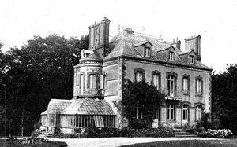
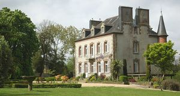
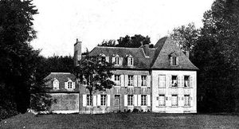
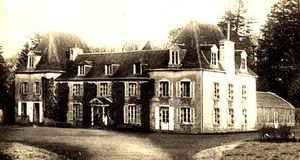
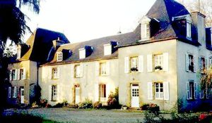

Recensement Jean-Claude Truffet
| Département | 29 — Finistère |
| Canton | Landerneau |
| Commune | La Roche Maurice |
| Type d'édifice | Château |
| Période d'origine | XV-XVII-XVIII |





PPONTOIS Propriété successive des familles de Bauchesnes. Le Pontois (Guillaume Le Pontois époux de Catherine Mahieu, avant 1693, et René Le Pontois époux de Catherine Derrien en 1693-1708), Moucheron (au mariage de Sébastien de Moucheron avec Marguerite Le Pontois), Le Roy du milieu du XVIIIe siècle, Parscau du Plessis (à partir du début du XIXe siècle, vers 1800), Audibert de Lavillasse de 1831, suite à l'achat du domaine du Pontois par Joseph Marie François Etienne d'Audibert de Lavillasse, époux de Louise Denise Guymar de Coatidreux, le 12 février 1831, Eugène Belin (1891 à 1895, à l'achat du domaine du Pontois à Stéphanie d'Audibert de Lavillasse le 28 janvier 1891), Gabriel Marie de Kermenguy (1895 à 1913, à l'achat du domaine du Pontois le 22 mai 1895), Yves Bernard (à partir de 1913, à l'achat du domaine du Pontois le 8 avril 1913). Le manoir actuel est assez récent. Il a remplacé l'ancien du XVe siècle ou XVIe siècle qui appartint, avec sa chapelle Saint-Guillaume, à la famille du Pontois . KERRAOUL, le manoir de Keraoul ou Kerraoul ou Kernoual, propriété successive des familles Keraoul (Robert de Keraoul en 1426), Le Gac de Keraoul (du XVIe siècle au XVIII siècle), O'Croly (par succession de feu Christophe Ange Le Gac, sieur du Quistillic), Olliviere à l'achat du domaine de Keraoul par Joseph Marie Ollivier le 31 décembre 1802. C'est Yves Isidore Marie Ollivier qui fait construire le nouveau château sur l'emplacement de l'ancien manoir, vers 1871-1873. Le domaine de Keraoul est vendu ensuite à Ernest Robert (époux de de Louise Miorcec de Kerdanet) le 16 février 1876, puis à Fernand Aubert de Vincelles (époux de Marie-Thérèse de la Bintinaye) vers 1901, puis à Louis Berthelot (époux de Marie Hautin) vers 1922. Le domaine est depuis 1946 la propriété de l'Association Don Bosco .
KERMADEC, ancien manoir de Kermadec (XIIIe siècle), où naquit vers le milieu du XIIIe siècle, Olivier Saladin, recteur de l'Université de Paris en 1348, puis évêque de Nantes, surnommé la Fleur des Prélats de son temps. Il se trouva à Avignon, lors de la canonisation de saint-Yves. Ce prélat était frère de Pigette Saladin, qui, porta, par mariage, la seigneurie de Kermadec à Hervé, fils d'Huon, sieur de Kerhuon, prévôt féodé héréditaire de la vicomté de léon. La manoir est reconstruit vers 1503 par Pierre Huon, sieur de Kermadec.
KERNEVEZ,ancien manoir de Kernevez (vers le milieu du XIXe siècle), propriété successive des familles d'Audibert de Lavillasse (vers 1861), Dieuleveult (en 1872, suite à la vente de Kernevez par Paul d'Audibert de Lavillasse, né en 1866 et décédé en 1906), Coatgoureden (en 1914, suite à la vente de Kernevez par Paul de Dieuleveult à Charles de Coatgoureden), Berthelot (de 1921 à 1995, suite à l'achat du domaine de Kernevez par Charles Alain Marie Berthelot frère de Louis Berthelot (qui achète Keraoul et époux d'Anne Louise Gaulard).
Pontois ; Famille de Pontois Kermadec ;Famille de Saladin Kernevez; Famille d'Audibert de Lavillasse
"
Quatre châteaux dans cet article sur la Roche-Maurice ; Pontois grav-4-5 , Kerraoul grav-1-2, Kermandec et Kernevez grav-3